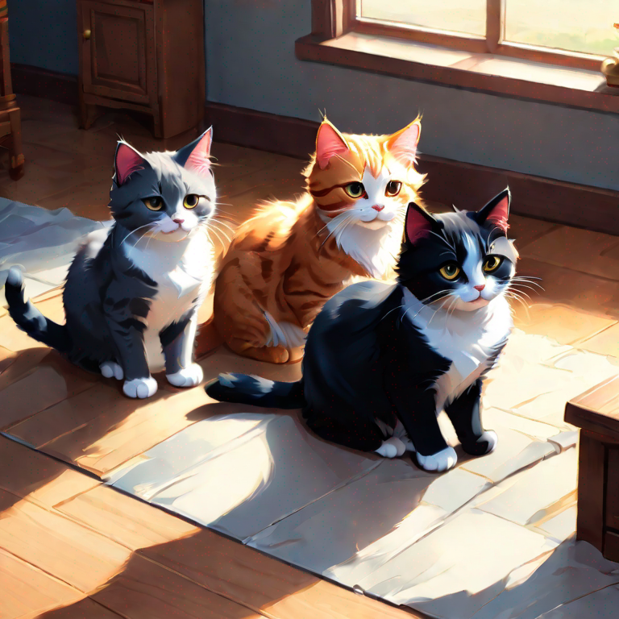
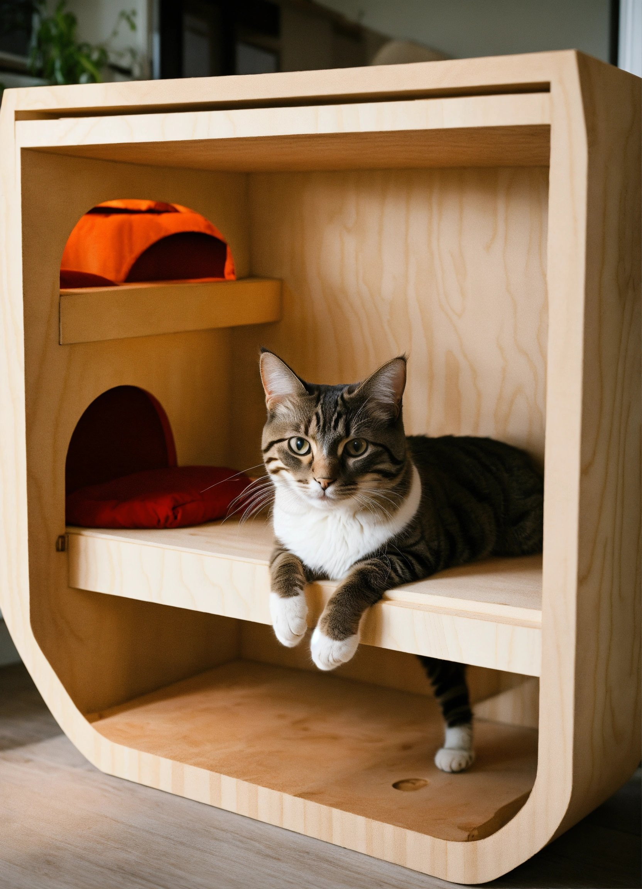
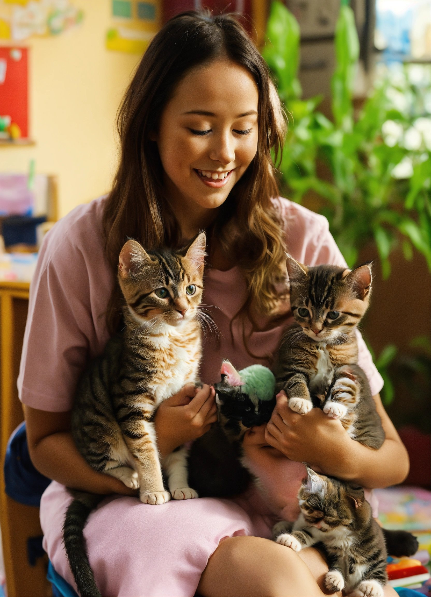
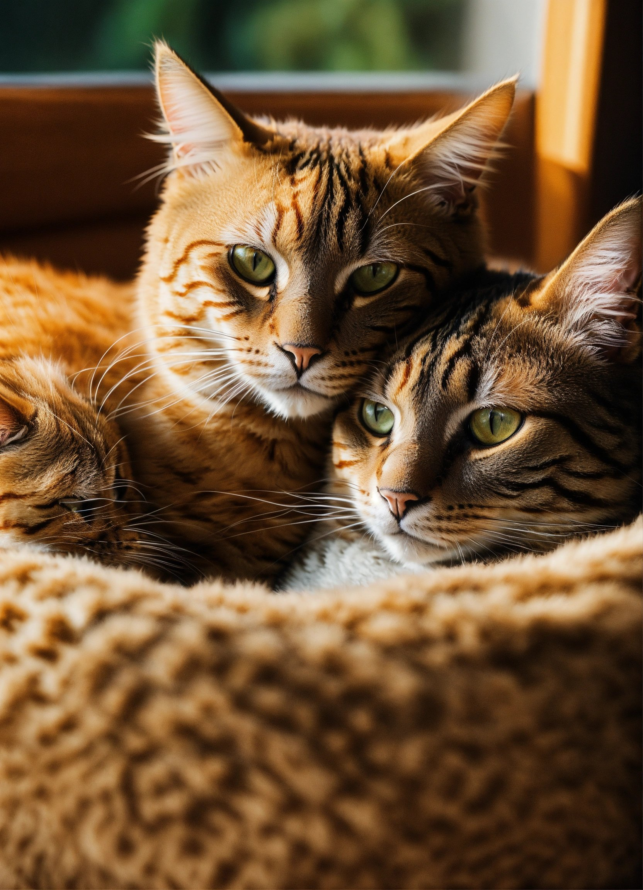

- Любовь на Лапках
-
— приют для кошек, где каждая мурчащая личность обнаруживает свое
уютное убежище и настоящий дом. Наша миссия простирается далеко за
стены приюта — мы стремимся создать не просто место для временного
пристанища, но и настоящий дом для кошки.
В каждой ласковой почесывающей ушко и в мягком взгляде наших пушистых подопечных таится история — история нежности, заботы и вдохновения. Мы уделяем особое внимание тому, чтобы создать надежное и заботливое место, где каждая кошка может расцвести в окружении безграничной любви и бескрайней заботы.
Присоединяйтесь к нашей семье, будьте частью истории, где любовь находит свой путь через мягкие лапки и дарит новую жизнь. В "Любви на Лапках" каждая кошка — особенная, каждая история — уникальна, и каждый волонтер, сотрудник и усыновитель — часть этого невероятного путешествия. Добро пожаловать в наш дом, где любовь остается на лапках и в сердцах. 🐾
О приюте
В нашем приюте мы открыты для каждой мурчащей души. Здесь каждый котик, каждая кошечка – это целая история. Мы стремимся создать для них уютное пристанище, где они могут найти безопасность, заботу и нежность.
У нас работает дружная команда, состоящая из сердечных сотрудников и самоотверженных волонтеров. Мы не просто помогаем животным – мы стараемся сделать каждую маленькую личность особенной, уделяя внимание и заботу каждой мягкой лапке, каждому нежному мурлыканью.
Здесь каждая кошка, каждый кот – это часть нашей семьи, и мы делаем все возможное, чтобы обеспечить им комфорт и счастье. Вместе мы создаем истории, где любовь и забота всегда остаются на первом месте. Добро пожаловать в наш приют, где каждая маленькая мурчащая личность находит свой дом!

Наша миссия
Как Вы можете помочь:
- Усыновите: Сделайте первый шаг к новому другу и усыновите кошку из нашего приюта.
- Пожертвования: Ваша финансовая поддержка поможет нам обеспечивать лечение и уход для наших подопечных.
- Волонтерство: Спонтанные обнимашки, игры и уход за кошачьими друзьями — присоединяйтесь к нашей волонтерской команде и создавайте с нами любовь на лапках!


